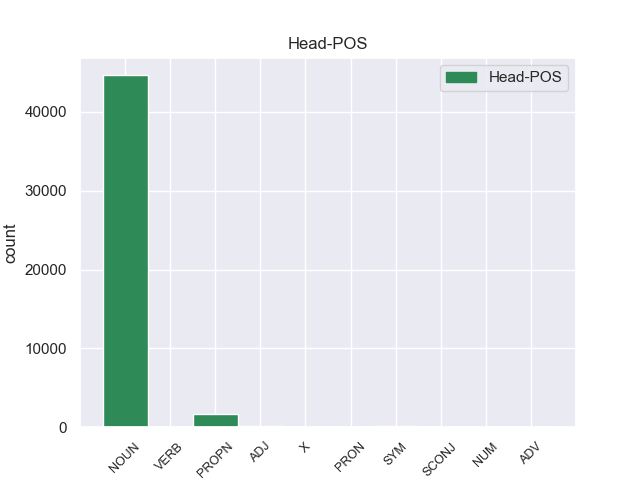
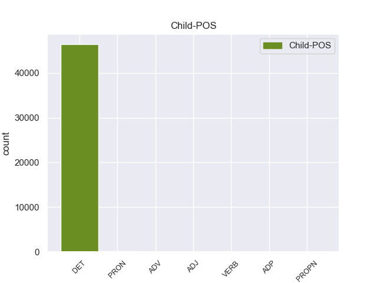

Distribution of features within this leaf



Agreement Rules sorted by frequency.
- When the dependent token is the determiner(det) of the head token, and the dependent token is DET.
1 En _ _ _ _ 0 _ _ _
2 1991 _ _ _ _ 0 _ _ _
3 , _ _ _ _ 0 _ _ _
4 como _ _ _ _ 0 _ _ _
5 ya _ _ _ _ 0 _ _ _
6 está _ _ _ _ 0 _ _ _
7 indicado _ _ _ _ 0 _ _ _
8 en _ _ _ _ 0 _ _ _
9 el _ _ _ _ 0 _ _ _
10 párrafo _ _ _ _ 0 _ _ _
11 anterior _ _ _ _ 0 _ _ _
12 , _ _ _ _ 0 _ _ _
13 se _ _ _ _ 0 _ _ _
14 creó _ _ _ _ 0 _ _ _
15 un _ _ _ _ 0 _ _ _
16 equipo _ _ _ _ 0 _ _ _
17 ad _ _ _ _ 0 _ _ _
18 hoc _ _ _ _ 0 _ _ _
19 para _ _ _ _ 0 _ _ _
20 averiguar _ _ _ _ 0 _ _ _
21 como _ _ _ _ 0 _ _ _
22 se _ _ _ _ 0 _ _ _
23 podía _ _ _ _ 0 _ _ _
24 desarrollar _ _ _ _ 0 _ _ _
25 el _ _ _ _ 0 _ _ _
26 Dialogo _ _ _ _ 0 _ _ _
27 Social _ _ _ _ 0 _ _ _
28 , _ _ _ _ 0 _ _ _
29 este _ _ _ _ 0 _ _ _
30 equipo _ _ _ _ 0 _ _ _
31 estaba _ _ _ _ 0 _ _ _
32 formado _ _ _ _ 0 _ _ _
33 por _ _ _ _ 0 _ _ _
34 representantes _ _ _ _ 0 _ _ _
35 de _ _ _ _ 0 _ _ _
36 todas _ _ _ _ 0 _ _ _
37 las el DET _ Definite=Def|Gender=Fem|Number=Plur|PronType=Art 38 det _ _
38 organizaciones organizacione NOUN _ Gender=Fem|Number=Sing 0 _ _ _
39 relacionadas _ _ _ _ 0 _ _ _
40 con _ _ _ _ 0 _ _ _
41 CES _ _ _ _ 0 _ _ _
42 , _ _ _ _ 0 _ _ _
43 UNICE _ _ _ _ 0 _ _ _
44 y _ _ _ _ 0 _ _ _
45 CEEP _ _ _ _ 0 _ _ _
46 ; _ _ _ _ 0 _ _ _
1 Si _ _ _ _ 0 _ _ _
2 Rodríguez _ _ _ _ 0 _ _ _
3 Zapatero _ _ _ _ 0 _ _ _
4 fuera _ _ _ _ 0 _ _ _
5 un _ _ _ _ 0 _ _ _
6 auténtico _ _ _ _ 0 _ _ _
7 patriota _ _ _ _ 0 _ _ _
8 debería _ _ _ _ 0 _ _ _
9 liderar _ _ _ _ 0 _ _ _
10 , _ _ _ _ 0 _ _ _
11 gobernando _ _ _ _ 0 _ _ _
12 , _ _ _ _ 0 _ _ _
13 las _ _ _ _ 0 _ _ _
14 reformas _ _ _ _ 0 _ _ _
15 que _ _ _ _ 0 _ _ _
16 este _ _ _ _ 0 _ _ _
17 país _ _ _ _ 0 _ _ _
18 necesita _ _ _ _ 0 _ _ _
19 para _ _ _ _ 0 _ _ _
20 salir _ _ _ _ 0 _ _ _
21 de _ _ _ _ 0 _ _ _
22 la _ _ _ _ 0 _ _ _
23 crisis _ _ _ _ 0 _ _ _
24 , _ _ _ _ 0 _ _ _
25 por _ _ _ _ 0 _ _ _
26 muy _ _ _ _ 0 _ _ _
27 duras _ _ _ _ 0 _ _ _
28 y _ _ _ _ 0 _ _ _
29 muy _ _ _ _ 0 _ _ _
30 impopulares impopulares ADJ _ Gender=Fem|Number=Sing 0 _ _ _
31 que _ _ _ _ 0 _ _ _
32 estas esta PRON _ Definite=Def|Gender=Fem|Number=Plur|PronType=Art 30 det _ _
33 sean _ _ _ _ 0 _ _ _
34 . _ _ _ _ 0 _ _ _
1 Se _ _ _ _ 0 _ _ _
2 dividen _ _ _ _ 0 _ _ _
3 en _ _ _ _ 0 _ _ _
4 dos _ _ _ _ 0 _ _ _
5 subtipos _ _ _ _ 0 _ _ _
6 , _ _ _ _ 0 _ _ _
7 uno _ _ _ _ 0 _ _ _
8 generalmente _ _ _ _ 0 _ _ _
9 compuesto _ _ _ _ 0 _ _ _
10 de _ _ _ _ 0 _ _ _
11 una _ _ _ _ 0 _ _ _
12 tumba _ _ _ _ 0 _ _ _
13 de _ _ _ _ 0 _ _ _
14 corredor _ _ _ _ 0 _ _ _
15 con _ _ _ _ 0 _ _ _
16 bóveda _ _ _ _ 0 _ _ _
17 con _ _ _ _ 0 _ _ _
18 piedras _ _ _ _ 0 _ _ _
19 en _ _ _ _ 0 _ _ _
20 voladizo _ _ _ _ 0 _ _ _
21 con _ _ _ _ 0 _ _ _
22 una _ _ _ _ 0 _ _ _
23 cámara _ _ _ _ 0 _ _ _
24 mortuoria _ _ _ _ 0 _ _ _
25 única _ _ _ _ 0 _ _ _
26 con _ _ _ _ 0 _ _ _
27 vinculación _ _ _ _ 0 _ _ _
28 a _ _ _ _ 0 _ _ _
29 la _ _ _ _ 0 _ _ _
30 entrada _ _ _ _ 0 _ _ _
31 por _ _ _ _ 0 _ _ _
32 un _ _ _ _ 0 _ _ _
33 pasaje _ _ _ _ 0 _ _ _
34 corto _ _ _ _ 0 _ _ _
35 y _ _ _ _ 0 _ _ _
36 cubierto _ _ _ _ 0 _ _ _
37 con _ _ _ _ 0 _ _ _
38 un _ _ _ _ 0 _ _ _
39 túmulo _ _ _ _ 0 _ _ _
40 de _ _ _ _ 0 _ _ _
41 piedras _ _ _ _ 0 _ _ _
42 , _ _ _ _ 0 _ _ _
43 con _ _ _ _ 0 _ _ _
44 las _ _ _ _ 0 _ _ _
45 entradas _ _ _ _ 0 _ _ _
46 orientadas _ _ _ _ 0 _ _ _
47 a _ _ _ _ 0 _ _ _
48 el _ _ _ _ 0 _ _ _
49 suroeste _ _ _ _ 0 _ _ _
50 , _ _ _ _ 0 _ _ _
51 hacia _ _ _ _ 0 _ _ _
52 la _ _ _ _ 0 _ _ _
53 puesta _ _ _ _ 0 _ _ _
54 de _ _ _ _ 0 _ _ _
55 el _ _ _ _ 0 _ _ _
56 sol sol NOUN _ Gender=Masc|Number=Sing 0 _ _ _
57 en _ _ _ _ 0 _ _ _
58 pleno pleno ADJ _ Gender=Masc|Number=Sing 56 det _ _
59 invierno _ _ _ _ 0 _ _ _
60 . _ _ _ _ 0 _ _ _
1 Pertenece _ _ _ _ 0 _ _ _
2 a _ _ _ _ 0 _ _ _
3 la _ _ _ _ 0 _ _ _
4 comarca comarca NOUN _ Gender=Fem|Number=Sing 0 _ _ _
5 de _ _ _ _ 0 _ _ _
6 La la PROPN _ Definite=Def|Gender=Fem|Number=Sing|PronType=Art 4 det _ _
7 Jara _ _ _ _ 0 _ _ _
8 y _ _ _ _ 0 _ _ _
9 linda _ _ _ _ 0 _ _ _
10 con _ _ _ _ 0 _ _ _
11 los _ _ _ _ 0 _ _ _
12 términos _ _ _ _ 0 _ _ _
13 municipales _ _ _ _ 0 _ _ _
14 de _ _ _ _ 0 _ _ _
15 Santa _ _ _ _ 0 _ _ _
16 Ana _ _ _ _ 0 _ _ _
17 de _ _ _ _ 0 _ _ _
18 Pusa _ _ _ _ 0 _ _ _
19 y _ _ _ _ 0 _ _ _
20 San _ _ _ _ 0 _ _ _
21 Martín _ _ _ _ 0 _ _ _
22 de _ _ _ _ 0 _ _ _
23 Pusa _ _ _ _ 0 _ _ _
24 a _ _ _ _ 0 _ _ _
25 el _ _ _ _ 0 _ _ _
26 norte _ _ _ _ 0 _ _ _
27 , _ _ _ _ 0 _ _ _
28 Villarejo _ _ _ _ 0 _ _ _
29 de _ _ _ _ 0 _ _ _
30 Montalbán _ _ _ _ 0 _ _ _
31 y _ _ _ _ 0 _ _ _
32 Navahermosa _ _ _ _ 0 _ _ _
33 a _ _ _ _ 0 _ _ _
34 el _ _ _ _ 0 _ _ _
35 este _ _ _ _ 0 _ _ _
36 , _ _ _ _ 0 _ _ _
37 Hontanar _ _ _ _ 0 _ _ _
38 a _ _ _ _ 0 _ _ _
39 el _ _ _ _ 0 _ _ _
40 sur _ _ _ _ 0 _ _ _
41 y _ _ _ _ 0 _ _ _
42 Los _ _ _ _ 0 _ _ _
43 Navalucillos _ _ _ _ 0 _ _ _
44 a _ _ _ _ 0 _ _ _
45 el _ _ _ _ 0 _ _ _
46 sur _ _ _ _ 0 _ _ _
47 y _ _ _ _ 0 _ _ _
48 oeste _ _ _ _ 0 _ _ _
49 , _ _ _ _ 0 _ _ _
50 todos _ _ _ _ 0 _ _ _
51 de _ _ _ _ 0 _ _ _
52 Toledo _ _ _ _ 0 _ _ _
53 . _ _ _ _ 0 _ _ _
1 Aquí _ _ _ _ 0 _ _ _
2 están _ _ _ _ 0 _ _ _
3 todos todos ADV _ Definite=Def|Gender=Masc|Number=Plur|PronType=Art 5 det _ _
4 los _ _ _ _ 0 _ _ _
5 villanos villano NOUN _ Gender=Masc|Number=Plur 0 _ _ _
6 más _ _ _ _ 0 _ _ _
7 célebres _ _ _ _ 0 _ _ _
8 de _ _ _ _ 0 _ _ _
9 el _ _ _ _ 0 _ _ _
10 Hombre _ _ _ _ 0 _ _ _
11 Araña _ _ _ _ 0 _ _ _
12 , _ _ _ _ 0 _ _ _
13 como _ _ _ _ 0 _ _ _
14 el _ _ _ _ 0 _ _ _
15 doctor _ _ _ _ 0 _ _ _
16 Pulpo _ _ _ _ 0 _ _ _
17 , _ _ _ _ 0 _ _ _
18 Venom _ _ _ _ 0 _ _ _
19 y _ _ _ _ 0 _ _ _
20 el _ _ _ _ 0 _ _ _
21 Duende _ _ _ _ 0 _ _ _
22 Verde _ _ _ _ 0 _ _ _
23 , _ _ _ _ 0 _ _ _
24 en _ _ _ _ 0 _ _ _
25 la _ _ _ _ 0 _ _ _
26 presentación _ _ _ _ 0 _ _ _
27 de _ _ _ _ 0 _ _ _
28 la _ _ _ _ 0 _ _ _
29 serie _ _ _ _ 0 _ _ _
30 que _ _ _ _ 0 _ _ _
31 seguirá _ _ _ _ 0 _ _ _
32 con _ _ _ _ 0 _ _ _
33 sus _ _ _ _ 0 _ _ _
34 aventuras _ _ _ _ 0 _ _ _
35 todas _ _ _ _ 0 _ _ _
36 las _ _ _ _ 0 _ _ _
37 semanas _ _ _ _ 0 _ _ _
38 . _ _ _ _ 0 _ _ _
1 Como _ _ _ _ 0 _ _ _
2 tal _ _ _ _ 0 _ _ _
3 , _ _ _ _ 0 _ _ _
4 Diva _ _ _ _ 0 _ _ _
5 , _ _ _ _ 0 _ _ _
6 que _ _ _ _ 0 _ _ _
7 libremente _ _ _ _ 0 _ _ _
8 se _ _ _ _ 0 _ _ _
9 alimenta _ _ _ _ 0 _ _ _
10 de _ _ _ _ 0 _ _ _
11 los _ _ _ _ 0 _ _ _
12 humanos _ _ _ _ 0 _ _ _
13 , _ _ _ _ 0 _ _ _
14 puede _ _ _ _ 0 _ _ _
15 utilizar _ _ _ _ 0 _ _ _
16 libremente _ _ _ _ 0 _ _ _
17 todas todas ADP _ Definite=Def|Gender=Fem|Number=Plur|PronType=Art 19 det _ _
18 sus _ _ _ _ 0 _ _ _
19 capacidades capacidade NOUN _ Gender=Fem|Number=Sing 0 _ _ _
20 , _ _ _ _ 0 _ _ _
21 mientras _ _ _ _ 0 _ _ _
22 que _ _ _ _ 0 _ _ _
23 Saya _ _ _ _ 0 _ _ _
24 , _ _ _ _ 0 _ _ _
25 que _ _ _ _ 0 _ _ _
26 evita _ _ _ _ 0 _ _ _
27 la _ _ _ _ 0 _ _ _
28 alimentación _ _ _ _ 0 _ _ _
29 de _ _ _ _ 0 _ _ _
30 sangre _ _ _ _ 0 _ _ _
31 humana _ _ _ _ 0 _ _ _
32 ( _ _ _ _ 0 _ _ _
33 se _ _ _ _ 0 _ _ _
34 alimenta _ _ _ _ 0 _ _ _
35 a _ _ _ _ 0 _ _ _
36 base _ _ _ _ 0 _ _ _
37 de _ _ _ _ 0 _ _ _
38 transfusiones _ _ _ _ 0 _ _ _
39 ) _ _ _ _ 0 _ _ _
40 , _ _ _ _ 0 _ _ _
41 por _ _ _ _ 0 _ _ _
42 lo _ _ _ _ 0 _ _ _
43 general _ _ _ _ 0 _ _ _
44 sólo _ _ _ _ 0 _ _ _
45 tiene _ _ _ _ 0 _ _ _
46 una _ _ _ _ 0 _ _ _
47 fuerza _ _ _ _ 0 _ _ _
48 ligeramente _ _ _ _ 0 _ _ _
49 superior _ _ _ _ 0 _ _ _
50 a _ _ _ _ 0 _ _ _
51 la _ _ _ _ 0 _ _ _
52 fuerza _ _ _ _ 0 _ _ _
53 a _ _ _ _ 0 _ _ _
54 nivel _ _ _ _ 0 _ _ _
55 humano _ _ _ _ 0 _ _ _
56 . _ _ _ _ 0 _ _ _
Disagree Examples:
1 Según _ _ _ _ 0 _ _ _
2 las _ _ _ _ 0 _ _ _
3 estimaciones _ _ _ _ 0 _ _ _
4 de _ _ _ _ 0 _ _ _
5 la _ _ _ _ 0 _ _ _
6 Asociación _ _ _ _ 0 _ _ _
7 de _ _ _ _ 0 _ _ _
8 Gobiernos _ _ _ _ 0 _ _ _
9 de _ _ _ _ 0 _ _ _
10 San _ _ _ _ 0 _ _ _
11 Diego _ _ _ _ 0 _ _ _
12 para _ _ _ _ 0 _ _ _
13 enero _ _ _ _ 0 _ _ _
14 de _ _ _ _ 0 _ _ _
15 el _ _ _ _ 0 _ _ _
16 2006 _ _ _ _ 0 _ _ _
17 , _ _ _ _ 0 _ _ _
18 habían _ _ _ _ 0 _ _ _
19 2,873 _ _ _ _ 0 _ _ _
20 personas _ _ _ _ 0 _ _ _
21 y _ _ _ _ 0 _ _ _
22 227 _ _ _ _ 0 _ _ _
23 hogares _ _ _ _ 0 _ _ _
24 en _ _ _ _ 0 _ _ _
25 el el DET _ Definite=Def|Gender=Masc|Number=Sing|PronType=Art 26 det _ _
26 área área NOUN _ Gender=Fem|Number=Sing 0 _ _ _
27 , _ _ _ _ 0 _ _ _
28 y _ _ _ _ 0 _ _ _
29 un _ _ _ _ 0 _ _ _
30 incremento _ _ _ _ 0 _ _ _
31 de _ _ _ _ 0 _ _ _
32 1035.6 _ _ _ _ 0 _ _ _
33 % _ _ _ _ 0 _ _ _
34 de _ _ _ _ 0 _ _ _
35 253 _ _ _ _ 0 _ _ _
36 personas _ _ _ _ 0 _ _ _
37 en _ _ _ _ 0 _ _ _
38 2000 _ _ _ _ 0 _ _ _
39 . _ _ _ _ 0 _ _ _
1 El _ _ _ _ 0 _ _ _
2 37 _ _ _ _ 0 _ _ _
3 % _ _ _ _ 0 _ _ _
4 de _ _ _ _ 0 _ _ _
5 la _ _ _ _ 0 _ _ _
6 población _ _ _ _ 0 _ _ _
7 vive _ _ _ _ 0 _ _ _
8 en _ _ _ _ 0 _ _ _
9 el el DET _ Definite=Def|Gender=Masc|Number=Sing|PronType=Art 10 det _ _
10 área área NOUN _ Gender=Fem|Number=Sing 0 _ _ _
11 urbana _ _ _ _ 0 _ _ _
12 . _ _ _ _ 0 _ _ _
1 La _ _ _ _ 0 _ _ _
2 otra _ _ _ _ 0 _ _ _
3 , _ _ _ _ 0 _ _ _
4 denominada _ _ _ _ 0 _ _ _
5 Pasta _ _ _ _ 0 _ _ _
6 Nussa _ _ _ _ 0 _ _ _
7 Duo _ _ _ _ 0 _ _ _
8 , _ _ _ _ 0 _ _ _
9 combina _ _ _ _ 0 _ _ _
10 esta _ _ _ _ 0 _ _ _
11 preparación _ _ _ _ 0 _ _ _
12 con _ _ _ _ 0 _ _ _
13 leche _ _ _ _ 0 _ _ _
14 condensada _ _ _ _ 0 _ _ _
15 , _ _ _ _ 0 _ _ _
16 a _ _ _ _ 0 _ _ _
17 imitación _ _ _ _ 0 _ _ _
18 de _ _ _ _ 0 _ _ _
19 los el DET _ Definite=Def|Gender=Masc|Number=Plur|PronType=Art 21 det _ _
20 huevos _ _ _ _ 0 _ _ _
21 sorpresa sorpresa NOUN _ Gender=Fem|Number=Sing 0 _ _ _
22 Kinder _ _ _ _ 0 _ _ _
23 . _ _ _ _ 0 _ _ _
1 MADRID _ _ _ _ 0 _ _ _
2 , _ _ _ _ 0 _ _ _
3 3 _ _ _ _ 0 _ _ _
4 ( _ _ _ _ 0 _ _ _
5 EUROPA _ _ _ _ 0 _ _ _
6 PRESS _ _ _ _ 0 _ _ _
7 ) _ _ _ _ 0 _ _ _
8 Las el DET _ Definite=Def|Gender=Fem|Number=Plur|PronType=Art 9 det _ _
9 tenistas tenista NOUN _ Gender=Masc|Number=Plur 0 _ _ _
10 españolas _ _ _ _ 0 _ _ _
11 Anabel _ _ _ _ 0 _ _ _
12 Medina _ _ _ _ 0 _ _ _
13 , _ _ _ _ 0 _ _ _
14 Carla _ _ _ _ 0 _ _ _
15 Suárez _ _ _ _ 0 _ _ _
16 , _ _ _ _ 0 _ _ _
17 María _ _ _ _ 0 _ _ _
18 José _ _ _ _ 0 _ _ _
19 Martínez _ _ _ _ 0 _ _ _
20 , _ _ _ _ 0 _ _ _
21 Nuria _ _ _ _ 0 _ _ _
22 Llagostera _ _ _ _ 0 _ _ _
23 , _ _ _ _ 0 _ _ _
24 Arantxa _ _ _ _ 0 _ _ _
25 Parra _ _ _ _ 0 _ _ _
26 y _ _ _ _ 0 _ _ _
27 Lourdes _ _ _ _ 0 _ _ _
28 Domínguez _ _ _ _ 0 _ _ _
29 han _ _ _ _ 0 _ _ _
30 decidido _ _ _ _ 0 _ _ _
31 retirar _ _ _ _ 0 _ _ _
32 su _ _ _ _ 0 _ _ _
33 plante _ _ _ _ 0 _ _ _
34 para _ _ _ _ 0 _ _ _
35 disputar _ _ _ _ 0 _ _ _
36 la _ _ _ _ 0 _ _ _
37 próxima _ _ _ _ 0 _ _ _
38 eliminatoria _ _ _ _ 0 _ _ _
39 de _ _ _ _ 0 _ _ _
40 la _ _ _ _ 0 _ _ _
41 Copa _ _ _ _ 0 _ _ _
42 Federación _ _ _ _ 0 _ _ _
43 tras _ _ _ _ 0 _ _ _
44 llegar _ _ _ _ 0 _ _ _
45 a _ _ _ _ 0 _ _ _
46 un _ _ _ _ 0 _ _ _
47 acuerdo _ _ _ _ 0 _ _ _
48 con _ _ _ _ 0 _ _ _
49 la _ _ _ _ 0 _ _ _
50 Real _ _ _ _ 0 _ _ _
51 Federación _ _ _ _ 0 _ _ _
52 Española _ _ _ _ 0 _ _ _
53 de _ _ _ _ 0 _ _ _
54 Tenis _ _ _ _ 0 _ _ _
55 ( _ _ _ _ 0 _ _ _
56 RFET _ _ _ _ 0 _ _ _
57 ) _ _ _ _ 0 _ _ _
58 después _ _ _ _ 0 _ _ _
59 de _ _ _ _ 0 _ _ _
60 más _ _ _ _ 0 _ _ _
61 de _ _ _ _ 0 _ _ _
62 cuatro _ _ _ _ 0 _ _ _
63 horas _ _ _ _ 0 _ _ _
64 de _ _ _ _ 0 _ _ _
65 reunión _ _ _ _ 0 _ _ _
66 en _ _ _ _ 0 _ _ _
67 el _ _ _ _ 0 _ _ _
68 Consejo _ _ _ _ 0 _ _ _
69 Superior _ _ _ _ 0 _ _ _
70 de _ _ _ _ 0 _ _ _
71 Deportes _ _ _ _ 0 _ _ _
72 ( _ _ _ _ 0 _ _ _
73 CSD _ _ _ _ 0 _ _ _
74 ) _ _ _ _ 0 _ _ _
75 con _ _ _ _ 0 _ _ _
76 la _ _ _ _ 0 _ _ _
77 mediación _ _ _ _ 0 _ _ _
78 de _ _ _ _ 0 _ _ _
79 el _ _ _ _ 0 _ _ _
80 secretario _ _ _ _ 0 _ _ _
81 de _ _ _ _ 0 _ _ _
82 Estado _ _ _ _ 0 _ _ _
83 para _ _ _ _ 0 _ _ _
84 el _ _ _ _ 0 _ _ _
85 Deporte _ _ _ _ 0 _ _ _
86 , _ _ _ _ 0 _ _ _
87 Jaime _ _ _ _ 0 _ _ _
88 Lissavetzky _ _ _ _ 0 _ _ _
89 . _ _ _ _ 0 _ _ _
1 MADRID _ _ _ _ 0 _ _ _
2 , _ _ _ _ 0 _ _ _
3 3 _ _ _ _ 0 _ _ _
4 ( _ _ _ _ 0 _ _ _
5 EUROPA _ _ _ _ 0 _ _ _
6 PRESS _ _ _ _ 0 _ _ _
7 ) _ _ _ _ 0 _ _ _
8 Las _ _ _ _ 0 _ _ _
9 tenistas _ _ _ _ 0 _ _ _
10 españolas _ _ _ _ 0 _ _ _
11 Anabel _ _ _ _ 0 _ _ _
12 Medina _ _ _ _ 0 _ _ _
13 , _ _ _ _ 0 _ _ _
14 Carla _ _ _ _ 0 _ _ _
15 Suárez _ _ _ _ 0 _ _ _
16 , _ _ _ _ 0 _ _ _
17 María _ _ _ _ 0 _ _ _
18 José _ _ _ _ 0 _ _ _
19 Martínez _ _ _ _ 0 _ _ _
20 , _ _ _ _ 0 _ _ _
21 Nuria _ _ _ _ 0 _ _ _
22 Llagostera _ _ _ _ 0 _ _ _
23 , _ _ _ _ 0 _ _ _
24 Arantxa _ _ _ _ 0 _ _ _
25 Parra _ _ _ _ 0 _ _ _
26 y _ _ _ _ 0 _ _ _
27 Lourdes _ _ _ _ 0 _ _ _
28 Domínguez _ _ _ _ 0 _ _ _
29 han _ _ _ _ 0 _ _ _
30 decidido _ _ _ _ 0 _ _ _
31 retirar _ _ _ _ 0 _ _ _
32 su _ _ _ _ 0 _ _ _
33 plante _ _ _ _ 0 _ _ _
34 para _ _ _ _ 0 _ _ _
35 disputar _ _ _ _ 0 _ _ _
36 la _ _ _ _ 0 _ _ _
37 próxima _ _ _ _ 0 _ _ _
38 eliminatoria _ _ _ _ 0 _ _ _
39 de _ _ _ _ 0 _ _ _
40 la _ _ _ _ 0 _ _ _
41 Copa _ _ _ _ 0 _ _ _
42 Federación _ _ _ _ 0 _ _ _
43 tras _ _ _ _ 0 _ _ _
44 llegar _ _ _ _ 0 _ _ _
45 a _ _ _ _ 0 _ _ _
46 un _ _ _ _ 0 _ _ _
47 acuerdo _ _ _ _ 0 _ _ _
48 con _ _ _ _ 0 _ _ _
49 la el DET _ Definite=Def|Gender=Fem|Number=Sing|PronType=Art 68 det _ _
50 Real _ _ _ _ 0 _ _ _
51 Federación _ _ _ _ 0 _ _ _
52 Española _ _ _ _ 0 _ _ _
53 de _ _ _ _ 0 _ _ _
54 Tenis _ _ _ _ 0 _ _ _
55 ( _ _ _ _ 0 _ _ _
56 RFET _ _ _ _ 0 _ _ _
57 ) _ _ _ _ 0 _ _ _
58 después _ _ _ _ 0 _ _ _
59 de _ _ _ _ 0 _ _ _
60 más _ _ _ _ 0 _ _ _
61 de _ _ _ _ 0 _ _ _
62 cuatro _ _ _ _ 0 _ _ _
63 horas _ _ _ _ 0 _ _ _
64 de _ _ _ _ 0 _ _ _
65 reunión _ _ _ _ 0 _ _ _
66 en _ _ _ _ 0 _ _ _
67 el _ _ _ _ 0 _ _ _
68 Consejo consejo NOUN _ Gender=Masc|Number=Sing 0 _ _ _
69 Superior _ _ _ _ 0 _ _ _
70 de _ _ _ _ 0 _ _ _
71 Deportes _ _ _ _ 0 _ _ _
72 ( _ _ _ _ 0 _ _ _
73 CSD _ _ _ _ 0 _ _ _
74 ) _ _ _ _ 0 _ _ _
75 con _ _ _ _ 0 _ _ _
76 la _ _ _ _ 0 _ _ _
77 mediación _ _ _ _ 0 _ _ _
78 de _ _ _ _ 0 _ _ _
79 el _ _ _ _ 0 _ _ _
80 secretario _ _ _ _ 0 _ _ _
81 de _ _ _ _ 0 _ _ _
82 Estado _ _ _ _ 0 _ _ _
83 para _ _ _ _ 0 _ _ _
84 el _ _ _ _ 0 _ _ _
85 Deporte _ _ _ _ 0 _ _ _
86 , _ _ _ _ 0 _ _ _
87 Jaime _ _ _ _ 0 _ _ _
88 Lissavetzky _ _ _ _ 0 _ _ _
89 . _ _ _ _ 0 _ _ _